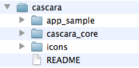
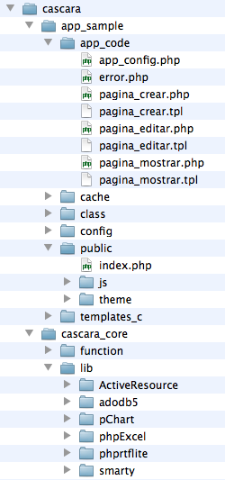
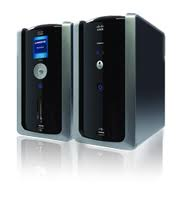
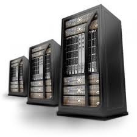

Cáscara, un framework sencillo para aplicaciones web
Esto es una prueba
- ¿Si Cáscara es la respuesta cuál era la pregunta?
- Las piezas del puzzle de Cáscara
- Organización de los archivos y carpetas
- Preparación e instalación del entorno de desarrollo
- Descargando Cáscara
- ADOdb y ActiveRecord
- El lenguaje de plantillas Smarty
- Autenticación básica
- Apéndice: Introducción a la Programación Orientada a Objetos con PHP
- Apéndice: Enlaces a documentación ampliada
¿Si Cáscara es la respuesta cuál era la pregunta?
Al comenzar a programar en PHP o en cualquier otro lenguaje se nos hace la boca agua pensando en todo lo que seremos capaces de hacer y en las maravillosas aplicaciones que podremos crear.
Pero cuando uno empieza a desarrollar su aplicación web y esta comienza a crecer y a crecer lo que pensábamos que iba a ser una catedral gótica de armoniosa belleza se ha convertido en una maraña informe de funciones, clases, código html y sentencias sql que parecen cobrar vida propia y escapan a nuestro control. Hemos creado un monstruo.
El que esto escribe, que dicho sea de paso es un intruso en esto de la informática y la programación, intentó hace tiempo poner “pie en pared” e intentó acogerse al amparo de diversos “frameworks” (“marco de trabajo” en español) que prometían hacerle la vida más fácil y darle más cosas echas . Quizás debido a su corta inteligencia todas las soluciones le venían grande. Tanto que nunca era capaz de pasar de la demo que venía con el tutorial del framework para llegar a crear aplicaciones que de verdad sirvieran para algo.
Entonces en un golpe de suerte pensó que podría combinar lo que había aprendido con cada framework que había probado para conseguir algo más pequeño y sencillo que se se ajustara a su obtusa inteligencia. Y así nació Cáscara, un franki-framework que es la combinación de unas pocas tecnologías. Curiosamente parece que funciona.
Las piezas del puzzle de Cáscara
En Cáscara se han combinado una serie de tecnologías estables, fiables y que han resistido la prueba del tiempo:
- Patrón de diseño: MVC
- Acceso a datos: ADODB y ActiveRecord
- Lenguaje de plantillas: Smarty
- Lenguajes de programación: PHP y JavaScript
- Lenguaje de marcas y estilo: HTML y CSS
Como complementos opcionales se puede incorporar también: AJAX, librerías PHP, librerías javascript, etc
Que no te asusten tantas siglas y nombres raros, si no te suenan de nada. De cada una de estas tecnologías verás justo lo imprescindible, además son bastante amigables con los principiantes. Los únicos requisitos imprescindibles son unos conocimientos básicos de PHP y algunos de HTML
Patrón de diseño: MVC
Un patrón de diseño en informática es lo mismo que un patrón de pret a porter, un esquema que ya sabemos que funciona para cortar unos pantalones o una camisa. Y un esquema que parece funcionar desde hace bastante tiempo en desarrollo de aplicaciones web es el denominado "Modelo - Vista - Controlador".
La idea de MVC consiste en separar en tres capas las partes de una aplicación web para poder programar con mayor claridad:
- La capa Modelo es la encargada de interactuar con los datos: clientes, artículos, cursos, asignaturas, calificaciones, etc.
- La capa Vista es la responsable de volcar la información en el explorador de tus usuarios, normalmente en lenguaje HTML aunque también podrías generar un PDF o una hoja de cálculo.
- La capa Controlador se situa entre las dos anteriores coordinando todo el trabajo y pasando información desde el Modelo a la Vista o desde la Vista al Modelo.
Cuando programes con Cáscara en la capa Modelo utilizarás clases escritas en PHP y basadas en las librerías ADODB y ActiveRecord que son las que te van a proporcionar un acceso sencillo y homogeneo a los datos. En la capa Vista utilizarás HTML y Smarty, también algo de JavaScript para validar formularios, ordenar tablas o conseguir algunos efectos especiales. Por último en la capa Controlador trabajarás sobre todo con PHP.
Ahora pon una mano sobre tu pecho y otra sobre este texto y pronuncia el juramento sagrado de MVC.
Yo, $Nombre $Apellidos, prometo solemnemente:
no escribir código PHP dentro de la Vista,
no poner ni una pizca de HTML en el Controlador,
ser un programador Modelo
e invitar a Juanan a una tostá con manteca colorá
si finalmente aprendo a programar.
Acceso a datos: ADODB y ActiveRecord
ADODB es una librería de acceso a datos que funciona como un conector entre nuestra aplicación y la base de datos.
Gracias a ADODB nuestra aplicación puede reconfigurarse para adaptarse con sólo un pequeño cambio a un tipo distinto de gestor de bases de datos, por ejemplo pasar de usar mySQL a Oracle.
Además ADODB nos proporciona una serie de funciones estandar para acceder a los datos que podemos encontrar en otros frameworks o aplicaciones desarrolladas con PHP.
ActiveRecord por otro lado convierte nuestras tablas en objetos a los que podremos acceder desde nuestras métodos y controladores con mayor claridad y facilidad que si tuvieramos que tratar con los arrays de datos que suelen devolvernos las funciones habituales de acceso a datos.
Es una de esas tecnologías que te ayudan a ser más ordenados y que aportan claridad a tu código.
Lenguaje de plantillas: Smarty
Smarty es un lenguaje de plantillas que nos permite introducir contenido dinámico en nuestras páginas sin tener que utilizar PHP. Quedando un resultado mucho más limpio y claro.
Como ejemplo vamos a ver como imprimiríamos el valor de una variable con PHP y smarty.
Codificado en PHP:
<p>Hola <?php print ($usuario); ?>, bienvenido a nuestro sistema</p>
Codificado en smarty
<p>Hola {$usuario}, bienvenido a nuestro sistema</p>
Y si fuera algo más complejo como una tabla de datos:
Codificado con PHP:
<table>
<?php
foreach ($datos as $dato)
{
print (“<tr><td>” . $dato . “</td></tr>”);
}
?>
</table>
Codificado con smarty:
<table>
{foreach from=$datos item=dato}
<tr><td>{$dato}</td></tr>
{/foreach}
</table>
Lenguajes de programación: PHP y JavaScript
PHP y Javascript son dos lenguajes ampliamente utilizados. Ambos tienen una gran comunidad de desarrolladores y de personas que aportan documentación, trucos y librerías que puedes utilizar libremente (como las que conforman Cáscara). Te recomiendo tener siempre a mano una buena referencia sobre ambos lenguajes. En la web oficial de PHP (http://www.php.net/manual/es/) encontrarás documentación en inglés y español. Para Javascript no conozco un manual oficial pero una buena referencia puede ser la que aparece en la web de Mozilla (https://developer.mozilla.org/es/JavaScript).
Lenguajes de marcas y estilos: HTML y CSS
Si por una remota casualidad has llegado hasta aquí sin unos aceptables conocimientos sobre HTML y CSS, te recomiendo volver a la casilla de salida y adquirir una buena destreza en ambos lenguajes. A tal fin te recomiendo que hagas una lectura (no exhaustiva) del siguiente manual: y vayas practicando a medida que avanzas.
CSS (Cascade Style Sheet u Hojas de Estilo en Cascada) es un lenguaje creado para controlar el aspecto o presentación de los documentos definidos con HTML. CSS es la mejor forma de separar los contenidos y su presentación y es imprescindible para crear páginas web complejas y aplicaciones web con una interfaz usable
HTML y CSS son dos lenguajes que puedes empezar a manejar en dos o tres días, no obstante dominar CSS puede llevar toda una vida, así que, al menos de momento, limítate a lo básico en este sentido. Si quieres profundizar más con CSS te recomiendo la lectura del libro gratuito: "Introducción a CSS" de Javier Eguíluz Pérez
Organización de los archivos y carpetas
Cuando te descargas Cáscara obtienes un directorio llamado "cáscara" que a su vez contiene tres carpetas:
- app_sample: es un molde o plantilla para empezar a construir una aplicación, puedes sacar tantas copias de esta carpeta como necesites.
- cascara_core: contiene el núcleo del framework, esto es, todos los archivos comunes a todas las aplicaciones.
- icons: una completa colección de iconos libre de derechos de autor para utilizarlos en tus aplicaciones.
Dentro del directorio de la aplicación (app_sample) verás:
- app_code: el directorio donde están todos los controladores (*.php) y plantillas (*.tpl) de la aplicación. Si esta se vuelve muy compleja puede ir separando estos ficheros con subdirectorios o usar prefijos en los nombres de los ficheros (según el gusto de cada uno).
- cache, config y templates_c: son directorios que smarty necesita. Las carpetas cache y templates_c necesitarán tener permisos de escritura y lectura para que tu aplicación funcione. No te olvides de hacer un chmod 777 sobre ellas cuando termines de descargarte Cáscara.
- class: aquí van todas las clases, mayoritariamente representan la parte del "modelo". Se podría haber llamado "model" pero estoy muy acostumbrado a "class", puede que su nombre cambie en una próxima versión de cáscara
- public: aquí van todos los archivos que tienen que ser accesibles desde el exterior. El fichero
index.phpque sería el Controlador, con mayúscula; los themes, el directorio javascript: js y la carpeta upload por si los usuarios de tu aplicación tienen que subir ficheros.
Por otra parte, dentro de cascara_core están:
- lib: con todas las librerias de terceros que se utilicen en la aplicación. Aquí está el código que hace que funcione Smarty, ADOdb y ActiveRecords. También podrás encontrar otras cosas: una libreria para generar informes en Excel, otra para generar documentos RTF, otra para generar gráficas, etc
- function:
aquí irán las funciones de código a las que se llame desde distintos
lugares dentro de la aplicación y no tengan cabida en los modelos, por
defecto contiene sólo un fichero
sanitize.php
Preparación e instalación del entorno de desarrollo
En todo proyecto web de complejidad media o alta debes distinguir claramente entre tres entornos de trabajo:
- Entorno de desarrollo: normalmente en un equipo local, a veces en un servidor de desarrollo, es el entorno en el que trabajarás para crear, probar, revisar y mejorar tu código.
- Entorno de preproducción: normalmente un servidor lo más parecido posible al que alojará definitivamente tu aplicación, sobre todo en lo que a software y versiones de software se refiere: PHP, Apache, MySQL, librerías, etc. Aquí podrás dar algún retoque para que la aplicación termine de funcionar, pero los cambios en el código debes hacerlos siempre en el entorno de desarrollo.
- Entorno de producción: es el entorno que aloja definitivamente tu aplicación y la base de datos, ya sea en uno o varios servidores. Quita las manos de este servidor, cualquier error que detectes debes intentar reproducirlo en preproducción para no interrumpir el servicio a tus usuarios y no comprometer sus datos.
Puedes desarrollar el código de tu programa en la máquina donde normalmente trabajes. Para ir probando la aplicación conviene que instales una serie de servicios que, dependiendo de tus habilidades como administrador de sistemas te resultarán más o menos fáciles. Una solución cómoda y efectiva en este terreno es instalar un paquete integrado tipo LAMP, WAMP o MAMP. La primera letra de estos acrónimos corresponde al sistema operativo sobre el que corren: Linux, Windows o Mac; el resto de las iniciales son para Apache, MySQL y PHP. Hay una estupenda distribución disponible para los sistemas operativos más frecuentes llamada XAMPP, que además incorpora otros interesantes paquetes como phpMyAdmin, Webalizer, OpenSSL, etc. Puedes descargar XAMPP gratuitamente desde http://www.apachefriends.org/es/xampp.html
También es deseable utilizar un sistema de gestión de versiones para asegurarte que siempre puedes revertir con seguridad los cambios que hagas en el código. Si en el proyecto trabaja más de una persona el sistema de gestión de versiones se hace imprescindible. Hasta hace poco SVN era la estrella en este ámbito, hoy en día ha sido prácticamente reemplazado por git.
Descargando Cáscara
Una vez instalados y configurados estos servicios:
- Descarga el paquete de Cáscara desde https://github.com/juananruiz/cascara
- Descomprime el fichero descargado en el directorio raíz del servidor web
- Copia la carpeta
app_samplea otra carpeta al mismo nivel que ella pero con el nombre de tu proyecto - Ya estás listo para empezar.
Si utilizas git para control de versiones, algo que te recomiendo vivamente, puedes bajarte el código con git@github.com:juananruiz/cascara.git
ADOdb y ActiveRecord
ADOdb es una interfaz o librería para acceder a bases de datos con PHP. Las funciones de acceso a base de datos en PHP no estan estandarizadas. Esto requiere una libreria que oculte las diferencias entre cada API de base de datos para que podamos cambiar facilmente de base de datos. Actualmente soporta My SQL, Oracle, Microsoft SQL Server, Sybase, Sybase SQL Anywhere, Informix, Postgre SQL, Front Base, SQLite, Interbase (versiones de Firebird y Borland), Foxpro, Access, ADO, DB2, SAP DB and ODBC. Se puede conectar a Progress y Cache Lite via ODBC.
Además de permitir realizar operaciones comunes sobre bases de datos como SELECT, INSERT o UPDATE también permite la creación y modificación de tablas, volcado inicial de datos, etc. Entre sus características más avanzadas tenemos: paginación de resultados, gestión de transacciones y monitorización de rendimiento.
Otro elemento fundamental en Cáscara es el mapeo a objectos relacionales usando la clase ADOdb_Active_Record.
El lenguaje de plantillas Smarty
Smarty es un motor de plantillas para PHP. Su misión es facilitar la separación entre la lógica de la aplicación (controlador) y la presentación (vista). Las plantillas de smarty son compiladas antes de ser enviadas al cliente, además el uso de la caché acelera el acceso a las páginas.
Las funciones que utilizaremos con más frecuencia en Smarty son:
En la parte del controlador
Siempre utilizaremos las funciones de Smarty a través de un objeto $smarty que hemos inicializado en el index.php En los controladores haremos una llamada a ese mismo objeto con global $smarty; para acceder a él sin problemas.
$smarty->assign(“variable”, “contenido”);Para pasar variables del controlador a la plantilla$smarty->display(“plantilla.tpl”);Para renderizar la plantilla y mostrar el resultado. En Cáscara sólo se usa desdeindex.php
En la parte de la vista o plantilla
{$variable}Para mostrar el valor de una variable{$variable|modificador}Los modificadores son muy útiles para dar el toque final a nuestras variables{$variable->propiedad}Para mostrar el valor de una propiedad de una variable de tipo objeto{$variable.clave}Para mostrar el valor de un elemento de un array{foreach from=$array item=elemento} … {$elemento} … {/foreach}Para recorrer un array y mostrar sus elementos{if a==b}…{elseif a==c}…{/if}Para construir un condicional
Esto sólo es un arañazo en la superficie de Smarty para seguir aprendiendo te recomiendo la siguiente documentación.
Documentación de Smarty
- Smarty versión 2 en español: aunque de momento no está traducida la versión 3 con esta puedes apañarte muy bien
- Smarty versión 3 en inglés
Autenticación básica de usuarios.
Ya tienes tu aplicación web montada y funcionando, los usuarios cantan, las nubes se levantan... Ahora queremos que los usuarios tengan que identificarse antes de acceder a ella. Vamos a necesitar tres cosas: una tabla de usuarios, un controlador login.php con su correspondiente plantilla login.tpl y algunos retoques en el controlador principal index.php
Los caballeros de la tabla... personas
La tabla de usuarios contendrá las personas que tienen autorización para acceder a tu aplicación. En principio, sólo aquellos que tengan nombre de usuario y clave en la tabla podrán acceder, más adelante podrás convertir este sistema básico en algo más sofisticado. Para empezar con algo puedes importarla o copiarla a partir de cualquier sistema que tengas actualmente para almacenar los datos de tus usuarios.
Este es el código SQL para crear la tabla de usuarios, aunque me gusta llamarla "personas":
CREATE TABLE `personas` ( `id` int(11) NOT NULL AUTO_INCREMENT, `nif` varchar(20) NOT NULL, `nombre` varchar(100) NOT NULL, `apellidos` varchar(254) NOT NULL, `correo` varchar(150) NOT NULL, `login` varchar(50) DEFAULT NULL, `clave` varchar(254) DEFAULT NULL, `sexo` char(1) DEFAULT NULL, `fecha_nacimiento` date DEFAULT NULL, `telefono` varchar(25) DEFAULT NULL, `domicilio` varchar(254) DEFAULT NULL, `localidad` varchar(254) DEFAULT NULL, `provincia` varchar(254) DEFAULT NULL, `cp` varchar(15) DEFAULT NULL, `organizacion` varchar(254) DEFAULT NULL, `puesto` varchar(254) DEFAULT NULL, `pagina_web` varchar(254) DEFAULT NULL, PRIMARY KEY (`id`) );
Debes ejecutar este código desde phpMyAdmin (o cualquier otra aplicación que utilices) para crear la tabla. Una vez creada debes dar de alta uno o dos usuarios para poder probar que todo funciona correctamente.
Ajustes en el controlador principal
Lo siguiente es introducir algunas modificaciones en el controlador principal index.php
//Comprueba si el usuario ha iniciado sesión
if (isset($_SESSION['usuario']))
{
//Si ha iniciado sesion carga la variable de sesion usuario en un objeto
$usuario = new persona(); //Este objeto sirve para el controlador principal y los secundarios
$usuario = $_SESSION['usuario']; //Desde los secundarios hay que ejecutar: global $usuario;
$smarty->assign('_usuario',$usuario); //Con esto el objeto también está disponible en la plantilla
}
else
{
// Si no ha iniciado sesión lo reenvias al controlador login.php
$page = 'login';
}
El controlador y la plantilla de login
El controlador login tiene un doble cometido: mostrar un formulario para que el usuario introduzca su login y clave; y si ya las ha introducido comprobar que son correctos y crear la sesión de usuario.
<?php
//--------------------------------------------------------------
// Archivo: app_code/login.php
//--------------------------------------------------------------
// Gestiona el inicio de sesión de un usuario en la aplicación
//--------------------------------------------------------------
global $smarty;
global $plantilla;
$smarty->assign('_javascript', array('validation'));
$smarty->assign('_nombre_pagina' , 'Inicio de sesión');
// Comprueba si vienen los datos del formulario
if (isset($_POST["login"]) && isset($_POST["clave"]))
{
$login = sanitize($_POST["login"],2);
$clave = sanitize($_POST["clave"],2);
// Para mayo seguridad tendremos codificada nuestra clave en md5
$clave = md5($clave);
$usuario = new persona();
if ($usuario->load("correo = '$login' AND clave = '$clave'"))
{
$_SESSION['usuario'] = $usuario;
header("location:index.php?page=acceso");
}
else
{
$aviso="Usuario o clave incorrectos.";
$smarty->assign('aviso',$aviso);
$plantilla = 'login.tpl';
}
}
else
{
// Si no vienen datos mostramos el formulario
$plantilla = 'login.tpl';
}
?>
El contenido de la plantilla "login.tpl" será parecido a este:
<form action="index.php?page=login" method="post" name="form_login">
Usuario: <input type="text" name="login" /><br />
Clave: <input type="password" name="login" /><br />
<input type="submit" name="submit" value="Acceder" /><br />
</form>
Apaga y vámonos
Aunque a veces no es necesario, no deja de ser un detalle elegante que des al usuario la posibilidad de cerrar la sesión antes de abandonar la aplicación o para dejar acceder a otro usuario. Para ello vas a crear un nuevo controlador logout.php.
El código para este controlador sería algo como:
<?php
//--------------------------------------------------------------
// Archivo: app_code/logout.php
//--------------------------------------------------------------
// Cierra la sesión del usuario y reenvía a la página de login
//--------------------------------------------------------------
session_destroy(); // matamos la sesión
header("location:index.php?page=login");
?>
Autenticación con LDAP, SSO, ADAS, etc
Si en tu organización existe un servicio de directorio para autenticar a los usuarios sería muy recomendable usar dicho sistema en un lugar de uno propio que nos obliga a mantener una base de datos de usuario por cada aplicación y al usuario una contraseña para cada uno.
En próximas versiones de esta documentación incluiré un ejemplo completo de como utilizar uno de estos sistemas con cáscara, aunque te adelanto que es bastante sencillo
Utilizando librerías externas con Cáscara: PHPExcel
PHPExcel es una fabulosa librería que te permite escribir y leer en ficheros Excel desde PHP
Puedes descargarte el código necesario y la documentación desde la dirección http://www.codeplex.com/PHPExcel/
Una vez descargado el paquete descomprímelo y cópialo a la carpeta cascara_core/lib/phpExcel. En el controlador o controladores donde vayas a utilizar la librería tienes que añadir require_once('../../cascara_core/lib/phpExcel/PHPExcel.php'); para llamar a la libreía principal, y posiblemente tengas que incluir también otras clases en función de lo que necesites hacer. Viene bastante bien explicado en la documentación, aunque si se te olvida alguno dará un error del fichero que te falta.
Aquí te dejo un ejemplo de creación y descarga de un fichero Excel con los datos de un array de objetos obtenidos a partir de una tabla de la base de datos.
<?php
// Incluye las dos clases necesarias
require_once('../../cascara_core/lib/phpExcel/PHPExcel.php');
require_once('../../cascara_core/lib/phpExcel/PHPExcel/IOFactory.php');
// Obtiene los datos desde el objeto persona (vinculado a la tabla personas)
$persona = new persona;
$personas = $persona->Find("true");
// Crea un objeto PHPExcel y marca como activa la primera hoja
$objPHPExcel = new PHPExcel();
$objPHPExcel->setActiveSheetIndex(0);
// Cabecera de titulos formateada
$objPHPExcel->getActiveSheet()->getStyle('A1:D1')->getFill()->setFillType(PHPExcel_Style_Fill::FILL_SOLID)->getStartColor()->setARGB('F0F0F0F0');
$objPHPExcel->getActiveSheet()->getStyle('A1:D1')->getFont()->setBold(true);
$objPHPExcel->getActiveSheet()->setCellValue("A1","NIF");
$objPHPExcel->getActiveSheet()->setCellValue("B1","Nombre");
$objPHPExcel->getActiveSheet()->setCellValue("C1","Apellidos");
$objPHPExcel->getActiveSheet()->setCellValue("D1","Correo");
// Itera los datos y asigna el valor a las celdas con la funcion setCellValueByColumnAndRow
$fila = 1;
foreach ($personas as $persona)
{
$fila ++;
$objPHPExcel->getActiveSheet()->setCellValueByColumnAndRow(0, $fila, $linea->nif);
$objPHPExcel->getActiveSheet()->setCellValueByColumnAndRow(1, $fila, $linea->nombre);
$objPHPExcel->getActiveSheet()->setCellValueByColumnAndRow(2, $fila, $linea->apellidos);
$objPHPExcel->getActiveSheet()->setCellValueByColumnAndRow(3, $fila, $linea->correo);
}
// Cabeceras para Excel 5
header('Content-Description: File Transfer');
header('Content-Type: application/octet-stream');
header('Content-Disposition: attachment; filename=personas.xls');
header('Content-Transfer-Encoding: binary');
header('Cache-Control: max-age=0');
// Crea una interfaz para volcar el objeto PHPExcel a un fichero
$objWriter = PHPExcel_IOFactory::createWriter($objPHPExcel, 'Excel5');
// Hace que el fichero se descargue directamente
$objWriter->save('php://output');
?>
Apéndice: Introducción a la Programación Orientada a Objetos con PHP
PHP, Cáscara y la programación orientada a objetos.
La "orientación a objetos" no es un lenguaje de programación, sino más bien una filosofía o paradigma para afrontar el diseño de un programa. La mayor parte de lenguajes de programación que permanecen en uso en la actualidad están orientados a objetos, una excepción sería el mítico lenguaje C.
Las primeras versiones de PHP no eran orientadas a objetos, sin embargo, a partir de la versión 5 de PHP podemos decir, sin apenas sonrojarnos, que PHP es un lenguaje orientado a objetos.
A pesar de ello se puede seguir programando en PHP sin utilizar orientación a objetos.
En Cáscara nos quedamos a medio camino, utilizamos objetos en el Modelo (para acceder a los datos) y también estaremos todo el tiempo usando un objeto Smarty para comunicarnos con la Vista, pero los controladores, al menos de momento, no están basados en objetos.
La orientación a objetos supone un gran salto evolutivo respecto al paradigma que la precede: la programación procedimental. En dicho modelo se definen procedimientos o funciones que luego se utilizarán de forma combinada desde un procedimiento principal para generar una aplicación. Las variables están esparcidas por todo el código aunque suele haber restricciones de "visibilidad", una función no "ve" las variables de otra a no ser que esta le pase los datos expresamente. Lo mismo sucedería con el procedimiento o función principal.
En programación orientada a objetos lo que vas a definir son módulos que intentan abstraer una realidad. Luego, estos módulos, se van a comunicar entre si para que la aplicación funcione. Cada módulo puede funcionar de manera autónoma, incluso pueden reutilizarse en otras aplicaciones.
Clases, objetos, métodos y propiedades
En programación orientada a objetos las clases serían los prototipos o definiciones de los modelos de los que acabamos de hablar, mientras que los objetos son la implantación de una clase en una entidad concreta. Piensa por ejemplo en una clase "Coche" que definiría las características que tiene un coche (color, potencia del motor, número de puertas, etc) y las funciones que éste puede realizar (arrancar, marchar, frenar, etc)
A partir de la clase "Coche" vas a generar una entidad concreta que sería un objeto. Siguiendo nuestro ejemplo tendrás por ejemplo un "seiscientos", color rojo, tres puertas con 60 CV. Podemos generar todos los objetos que necesitemos de la clase "Coche"
Como se generan clases y objetos en PHP
Para generar una clase en PHP utilizamos la palabra claveclass. Las variables de una clase reciben el nombre de métodos y podemos definirlas con una de estas palabras: var, public, protected y private. Las funciones se definen con la palabra clave function
<?php
class Persona()
{
// Normalmente empezamos definiendo las propiedades;
var nombre;
var apellidos; //var y public son equivalentes
public telefono; //todas las funciones definidas hasta ahora son públicas
private tarjeta_credito; //esta propiedad sólo es accesible desde la propia clase
private fecha_nacimiento;
// Ahora empezamos a definir métodos
function iniciar_sesion($parametro1, $parametro2)
{
}
function calcula_edad($fecha)
{
// Aquí irá el código que hará que tu función haga algo interesante
$edad = date("m/d/Y") - ($this->fecha_nacimiento);
return $edad; //en este caso la función devuelve un resultado
}
}
?>
En Cáscara cada clase la vamos a definir dentro de un fichero php con el mismo nombre de la clase y la vamos a colocar dentro del directorio "class". No olvides poner <?php al principio y ?> al final.
New: creando nuevos objetos
La manera más común de instanciar un objeto a partir de una clase en PHP es mediante el comandonew
Este comando invoca al constructor de la clase para crear un nuevo objeto en memoria que asignaremos a una variable, almacenaremos en un array o también como propiedad de otro objeto (objetos que contienen objetos que contienen objetos...)
Para muestra un botón:
$usuario = new Persona();
Los objetos en acción
Ya has definido tu clase, y dentro de ella algunos métodos y propiedades. Ahora llega el momento de que tus objetos cobren vida.
$usuario = new Persona(); // instanciamos el objeto
$usuario->nombre = 'Pedro'; // asignamos valores a sus propiedades
$usuario->apellidos = 'Pérez Ramírez';
$usuario->fecha_nacimiento = '25/12/1990';
$edad = $usuario->calcula_edad('12/06/2012'); // ejecutamos un método
echo $usuario->nombre . ' ' . $usuario->apellidos . '(' . $edad . 'años)'
La variable $this
La palabra clave $this hace referencia a la propia clase desde dentro de ella.
Imagina que estás desarrollando una clase Persona, con las propiedades: nombre, apellidos, fecha_nacimiento. Ahora queremos definir un método que calcule la edad actual a partir de la fecha de nacimiento. Por tanto desde ese método tendremos que acceder a una propiedad de la propia clase, la forma de hacerlo es con $this.
class Persona()
{
var $nombre;
var $apellidos;
var $fecha_nacimiento;
function calcula_edad()
{
$edad = date("m/d/Y") - $this->fecha_nacimiento;
$return $edad;
}
}
El constructor
El constructor es una función especial de una clase a la que se llama cuando se instancia la clase en un nuevo objeto
El uso de esta función es opcional y lo utilizaremos siempre que tenga sentido hacerlo
Definiremos la función constructor como cualquier otra función pero con la palabra reservada __construct(). Observa que lleva dos guiones bajos delante.
Modificadores de acceso
Tanto las propiedades como los métodos de una clase pueden tener distintos niveles de acceso. Así tenemos:
- public
- Puede accederse a la propiedad o método desde fuera de la clase
- protected
- Sólo se puede acceder desde dentro de la clase y desde las clases hijas
- private
- Sólo se puede acceder desde la propia clase, ni siquiera desde una clase hija
Nota: Cuando declaras una propiedad con la palabra "var" se considera igual que "public", aunque en la actualidad es aconsejable usar esta última.
Herencia
En programación orientada a objetos la herencia es el mecanismo por el cual podemos derivar una clase a partir de otra. La herencia es de gran utilidad para implementar clases que hacen cosas parecidas pero varían ligeramente unas de otras
Imagina que tienes la clase Persona, con una serie de funciones y métodos. Analizando tu aplicación ves que necesitas distintos tipos de personas: alumnos y profesores por ejemplo. Entonces implementas primero la clase Persona y luego derivas las otras dos clases a partir de ella añadiendo las características direrenciales de cada una.
Para que una clase herede de otra usamos la palabra clave extends
Para que la clase Alumno herede de Persona, haríamos algo como:
class Alumno extends Persona
{
var $curso;
var $creditos;
function aprobar_asignatura()
{
// código de la función
}
}
Por el echo de "heredar" de la clase Persona la clase Alumno ya posee las propiedades de esta: nombre, apellidos, fecha_nacimiento y también sus métodos: calcula_edad
Consejos del abuelo cebolleta
Cuando empieces a pensar en una nueva aplicación es muy util dibujar los objetos en forma de diagrama para tener una visión más intuitiva de ellos.
Aquí tienes unos cuantos consejos:- Usa papel y lápiz
- Dibuja cajas que representen cada objeto.
- En las cajas, crea una lista de sus métodos y propiedades.
- Usa flechas y lineas entre cajas para denotar relaciones (padre – hijo) entre objetos, cuando las haya.